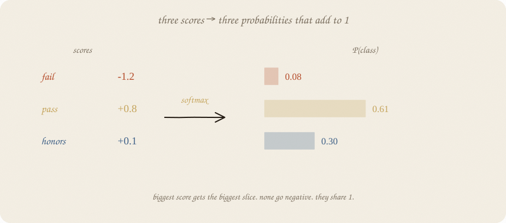
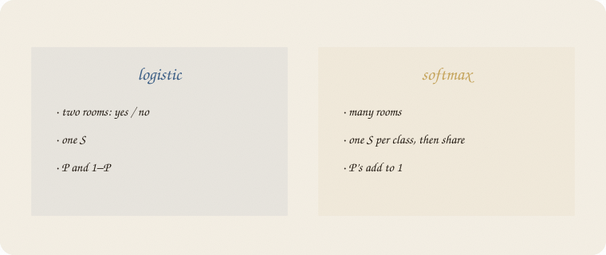
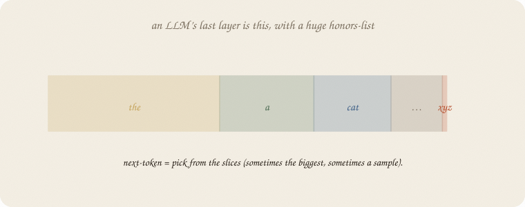

datazines · a sketchbook

Read 01 logistic regression and 01 distributions. Coin with two faces → coin with many faces. Same exam world: now fail / pass / honors.
Flip it like a notebook. One page = one idea. Done.
Logistic: one score, one S, P(pass) and 1 − that.
Three rooms cannot share one S. Fail, pass, honors: you need three scores, then a way to turn them into three probabilities that add to 1 and never go negative.
That squash is softmax. Ugly name. Friendly job: biggest score gets the biggest slice; everyone shares 1.

Example scores: fail −1.2, pass +0.8, honors +0.1.
Exponentiate (so nothing is negative), then divide by the total:
P = [0.08, 0.61, 0.30] — pass takes the pile.
Each class still has a linear score inside (a + b · hours), like logistic. Softmax is only the sharing.
b now: extra hours lift honors relative to fail. You read which room gets more of the pile, not “+b probability.”
Train: the true room should get a big slice. If honors was true and P(honors) = 0.10, that is a nasty surprise. If it was 0.60, a smaller one. People call that leftover cross-entropy — surprise of the true room, −log P(true). Formula lives with next-token: 04 LLM. Tree entropy measured mix in a room. Here surprise is aimed at the true room.

A language model is the same squash over a huge room-list (next words). Bookmark, not this notebook: 04 LLM.
Use: pick the biggest slice, or sample. Temperature later. The machine is already this one.
If you keep only one thing:
many scores, share 1. last layer of an LLM.
Eighty students. Same exam hours. y has three rooms, driven by hours. LogisticRegression with 3 classes is softmax (multinomial).
import numpy as np
from sklearn.linear_model import LogisticRegression
from sklearn.model_selection import train_test_split
rng = np.random.default_rng(7)
n = 80
hours = rng.uniform(1, 6, n)
logits = np.stack([2.0 - 0.9 * hours, 0.2 + 0.1 * hours, -2.5 + 0.85 * hours], axis=1)
ex = np.exp(logits - logits.max(1, keepdims=True))
p = ex / ex.sum(1, keepdims=True)
y = np.array([rng.choice(3, p=pp) for pp in p]) # 0 fail, 1 pass, 2 honors
Xtr, Xte, ytr, yte = train_test_split(hours.reshape(-1, 1), y, test_size=0.3, random_state=0)
clf = LogisticRegression().fit(Xtr, ytr)
print("counts fail/pass/honors", np.bincount(y, minlength=3))
print("acc train/test", round(clf.score(Xtr, ytr), 3), round(clf.score(Xte, yte), 3))
print("coef hours [fail, pass, honors]", np.round(clf.coef_[:, 0], 3))
print("P | 2h", np.round(clf.predict_proba([[2]])[0], 3))
print("P | 5h", np.round(clf.predict_proba([[5]])[0], 3))
counts fail/pass/honors [15 26 39]
acc train/test 0.536 0.542
coef hours [fail, pass, honors] [-0.941 0.259 0.682]
P | 2h [0.31 0.426 0.263]
P | 5h [0.006 0.311 0.683]
Hours up: fail’s b negative, honors positive. At 2 hours the pile is mixed; at 5 hours honors 0.68, fail almost gone. Accuracy ~0.54 is not a scandal — three rooms, one lever, overlapping S-shapes. The pile is the point, not a 90% trophy.
predict_proba is the slices. predict is argmax (biggest room).
| word | meaning |
|---|---|
| score (logit) | a + b x, one per room |
| softmax | exp(score) / sum exp → P’s add to 1 |
| logistic | softmax with two rooms |
| cross-entropy | surprise of the true room |
| vocab | LLM: rooms = next tokens |
Also called (in a room):
| here | there |
|---|---|
| room | class |
| slices | probabilities |
| leftover | cross-entropy |
Reach for it when
Skip it when
Pays you: the many-class S. The LLM one-liner without a transformer cartoon.
Costs you: still linear scores inside (until a net). Argmax hides uncertainty. Three-way accuracy looks “low” even when the pile is honest.
Classification 03. Descent: 01 gradient descent. Costumes: 01 distributions. The hidden floor: 01 neural net.
Flip it like a notebook. One page = one idea.